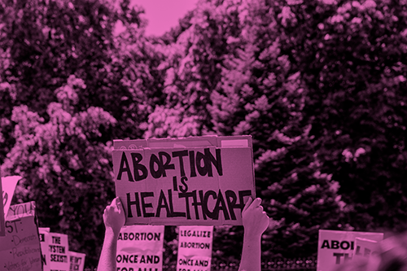

What’s it like working at an abortion clinic in Chicago?
The Midwest especially is like such a hub right now, and I can imagine it's kind of similar where you are right now in the Northeast with just abortion access as a whole, because so much of the rest of the country is it's just like either gone or so heavily limited that people need to travel to the Midwest or sometimes to the east coast. But based on like, where so many of the states where the restrictions are, a lot of the traveling winds up being to the Midwest, just because it's closest.
Right now Indiana has an abortion ban. At the time we started, the ban was in limbo because of legislation. All Options Resource Center is the major pregnancy and family planning option in Indiana that's not Planned Parenthood. And they specifically work with people on the ground, whereas Planned Parenthood feels more like this larger overarching organization that has a lot more bureaucracy as a part of it.
You get a lot of out-of-state people, right?
"Sometimes that's ranging anywhere from Texas to Florida."
A huge amount. Prior to Roe being overturned, we still saw plenty of out of state people, especially from Indiana, Wisconsin, bordering states. But now I would say it's probably a solid quarter of people that we see, sometimes more that are out of state. Sometimes that's ranging anywhere from Texas to Florida. We had someone the other day from Minneapolis, because she couldn't even get in there. And they were quoting her a crazy amount of time and a crazy amount of money. Access has become so limited just because of sheer volume.
What do you think the trajectory of these bans is going to look like?
I am thinking that we are going to have to start heading in the direction of a lot of community-based resources, because there are resources now, and they're good. There is the Midwest Access coalition, Chicago Abortion Fund, both of which are really good and very helpful. There's also a national abortion fund. I think it's called the Red Tent Fund. I think that one is somewhat newer. I'm not as familiar with that one, but there are a lot of funds to assist people with travel and to help offset cost, and at least specifically in regards to my work.
This past year, we made less money than we did the year before because of a snow storm, even though we had grant money this year. But I was able to get it matched. All Options was doing a match program with an organization where if you donated, they met. So we donated $4,000 and it got doubled. That was a big deal. This year we're going to try and do the same thing, and I think we're going to try and reach out to more organizations that do this. There are always local companies that are willing to do this. Especially if they're matching you because then they get a tax deduction on it, so they're more likely to do it. It has its own flawed system, but it's really helpful when you're trying to do something like this.
We are an independent clinic, so we are also kind of able to work a little bit more individually, and use our own discretion on individual cases. So there are times where we might bend the rules a little bit, just say ‘you're not going to pay anything’. Which is so nice. That is one of the many perks of being an independent clinic, is having the ability to do that without having to go through the approval of 15 different people like you do at a nonprofit like Planned Parenthood.
"we might be approaching a time where there does need to be more community-based resources"
Especially with the current political climate and the changes that we are likely going to see, I could definitely see issues with lack of funds for people. We've seen that with other access funds. And luckily, there are others that pop up. But there have been a couple access funds that we have completely lost, and there have been a couple other access funds that used to cover things like 75% to in full, and now they can only cover 50% and sometimes even less. When you see that kind of decrease, then you're also just going to see a decrease in people actually being able to access the care because they can't pay for it. Or if they are able to scrounge up enough to pay for the procedure, they may not be able to pay for travel costs. There's criteria that goes into everything. And so if you don't meet one criteria for funds, but you meet another it just gets convoluted and tricky. So I have definitely thought that we might be approaching a time where there does need to be more community-based resources.
In this specific instance, it could be Chicago, or it could be more broadly, the Midwest, where people who have had abortions are comfortable being open about that or sharing their experiences. Serving as either a sounding board, or a resource point - whether it be information support or just general help for people going through that process. The community resources could be rides to and from the clinic, or community dinners, cooking food. Sometimes these organizations, they'll pay for travel and they'll pay for lodging, but not everyone has the money that they can buy themselves DoorDash after getting this procedure.
A lot of people don't think of that. It could be remedied by a more community-based approach of just local people kind of being there to come together to assist people, as opposed to having to rely on these organizations that are good, don't get me wrong. They're good organizations, but they serve certain purposes and other purposes they just aren't able to provide for. Especially seeing such a huge uptick in need, they just might not be able to provide as much as a localized chapter or organization that could help provide other funds, or connect people to food. Being able to provide just a hot meal, a place to stay, a ride, even just a pool of funds for someone who really needs extra help. I think that we're definitely going to see an increased need for that in the coming years.
I love all the small examples. The super important work of abortion funds gets really publicized, but then there are these smaller things that can absolutely happen amongst a group of people. And then safety, connection to these abortion funds, and creating networks of people becomes really important. One of those smaller things that helps with people literally getting in the door is the people who walk people into clinics because people are protesting. People do that at your clinic, right?
It's an outside organization. I want to say it's called Illinois Choice Access Team, or something along those lines. They have a very long standing relationship with our clinic. It used to be that they were just there on Saturdays, because that was the only day that we would get protesters. But we started to get protesters almost every day. So we've been seeing them almost every day. Now, basically, if there are protesters, they show up. We're going to need more counter-protesters helping people because the same volunteers can't be there every single day.
Do you have any examples of things that you think people should be aware of about accessing an abortion? Things that can help?
Something that would be so hugely hopeful would be for people with case management and social work experience to work outside the constraints of their jobs a bit. They know how to work with patients, where to look, where not to look, and where to not leave a trail. I think it could be very beneficial to have people do this, even if it’s a huge ask, because I've seen some really, really incredible case managers and social workers in my line of work. I've also seen some really terrible ones. The really good ones that I've seen are ones that bend over backwards and break some rules, and I see that a lot within the context of immigrants specifically. Especially because Chicago, a few months, ago saw a huge influx of Venezuelan migrants who came into Texas. Then Texas basically sent them to Chicago, and Chicago struggled because they really didn't have the infrastructure to prepare for that amount of people coming in who needed resources and homes. There was a lot of work done within the city to try to mitigate it. Obviously, only so much can be done.
But all this to say, we saw a lot of patients coming in who were in a tough spot because they were pregnant. They didn't want to be or couldn't be. They didn't have a dime to their name. They didn't have any documentation, nothing. Literally nothing at all. A lot of these funding programs can't provide you with assistance if you don't have legal documentation, because they have to go through their own documentation process. So if you're an undocumented immigrant, then they can't provide you with that help, unfortunately.
And so at that point, it falls on community resources. Specifically community organizations’ resources, and the mercy of whatever clinic you're working with to try to work with you. Luckily enough, my boss is an incredible woman. And when those kinds of women come through our facility my boss is like ‘don't you dare charge them a dime’.
"In our situation we look out. But that isn't going to be the situation anywhere they go."
In our situation we look out. But that isn't going to be the situation anywhere they go. It can be very difficult in a lot of different ways. Obviously, it's difficult across the board, but something that I've seen that can make it only more difficult is if that patient is a minor. We have had several instances of young girls. Come to us who were assaulted when they were crossing the border, and now they need an abortion, but they have nothing. They don't even have family here, and they're staying in shelters. They don't speak English and so they are very much at the mercy of the people around them, kind of trying desperately to shuffle them around and try to figure everything out for them. I distinctly remember one day we had a social worker come in with three girls, all under 18, all who needed procedures and all the same circumstances. That social worker had every scrap of documentation that she could provide. She did absolutely everything that she could, and she stayed by those girls the whole time. She made sure that they were not going to pay a dime. She made sure that they were safe. And she stayed in the clinic for, I think, nine hours. Start to finish, to make sure that all those girls got through. And I know for a fact that she was not doing everything above the table. There's no way that she could be doing all of that above the table. We need people like that. We need people who are going to say ‘this is more important than the rules’. Luckily, my boss is the same way. There needs to be more people like that.
General healthcare, also very helpful. I know that there is starting to be an increase of people looking into abortion doula stuff. I don't know if that’s an official title that people can get, or if it's kind of a vigilante thing that people are doing. I think that that is actually something that could be helpful, especially for people doing the pill abortion, because that's one that you do pretty much on your own. It could be very helpful to have a designated person who's there with you, making sure you're okay.
I did not know this until you told me about the medical complications that can happen with the pill. It's amazing, obviously, that people are able to do this in a discrete setting, access these pills relatively easily, or through networks, much more easily and safely than a lot of what was happening before. There are still things people should be aware of.
It is safe, but like any medication, there are risks associated with it. I think a lot of people assume it’s going to be totally fine, and most of the time, it is. However, my perspective is a bit skewed because I work on the surgical side, so I often see cases where the pill didn’t work. In those situations, patients end up needing a surgical procedure anyway. Sometimes it's just an inconvenience, but other times, it leads to significant complications—like someone not realizing they’re still pregnant until they’re 20 weeks along, or experiencing severe hemorrhaging or miscarriage at 14 weeks. Miscarriage at 14 weeks is very different from at seven weeks. At seven weeks, it’s more like a very heavy period. At 14 weeks, it’s a hemorrhage risk that could lead to sepsis or even death.
"it highlights the importance of planning, including having a backup plan if the pill doesn’t work."
A lot of the risks stem from desperation—people just want to access abortions, so they may not be fully aware of the potential complications. This isn’t anyone’s fault, but it highlights the importance of planning, including having a backup plan if the pill doesn’t work.
Is there fear about losing access to medication abortions?
Definitely. There’s been a lot of discussion about this at my workplace. Being in Illinois, which has strong abortion protections, we currently don’t feel at immediate risk of losing access to medication abortions. However, patients often ask us if we’ll be able to continue offering them or if we might go out of business. We always reassure them that we’ve been here since the 1980s and we’re not going anywhere.
That said, there’s uncertainty about the future. For instance, mifepristone—the medication used to start the abortion process—is being targeted for restriction, even though it’s used for many other purposes. Losing access to it would make things much more complicated. There’s a school of thought that just using the second medication could still be effective, but that comes with higher risks. If restrictions tighten, we’ll have to adapt, but for now, we feel secure in our ability to continue providing care.
How can people support abortion clinics beyond donating to abortion funds?
"independent clinics are often the ones taking the brunt of increased demand for abortion care."
That’s the big question. Supporting independent abortion clinics specifically can make a significant difference. While Planned Parenthood is important, independent clinics are often the ones taking the brunt of increased demand for abortion care. These clinics focus solely on abortion care—they live and breathe it. The staff are experts, and they can adapt more quickly to meet patients’ needs because they don’t have to go through layers of bureaucracy like Planned Parenthood does.
What about addressing access disparities in abortion deserts?
That’s a tougher issue. Organizing in ways that address access disparities is crucial, especially in areas where abortion is technically legal but still difficult to obtain. Independent clinics are often the ones stepping up in these situations. They’re more agile and able to adjust their schedules or operations to meet demand.
For anyone looking to help, it’s about thinking creatively. Clinics might need security, legal assistance, or administrative support. Simply checking in with your local independent clinic to see what they need can make a difference. Offering whatever skills you have—whether it’s legal expertise, healthcare experience, or even just being available to support their staff—goes a long way
BACK TO TOP